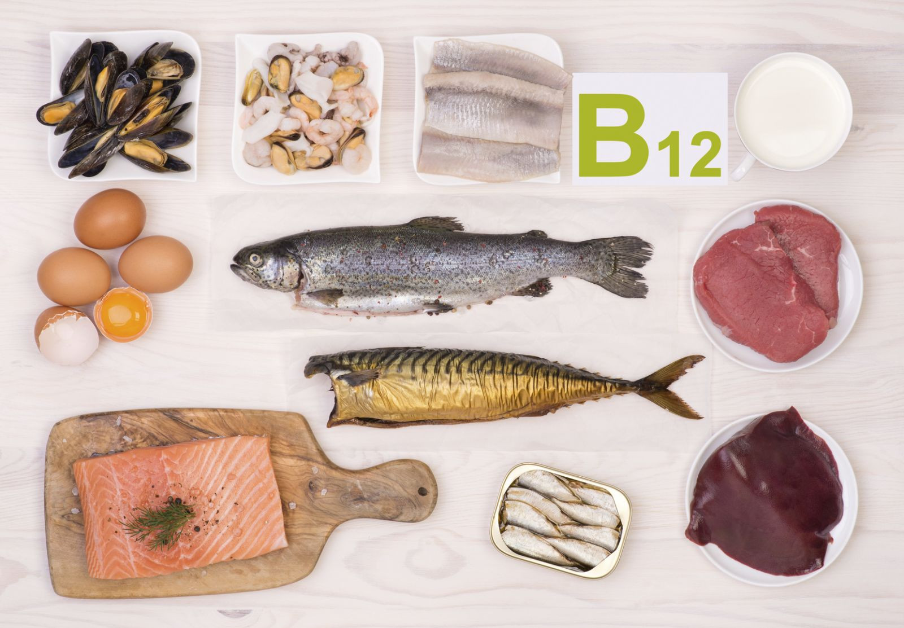
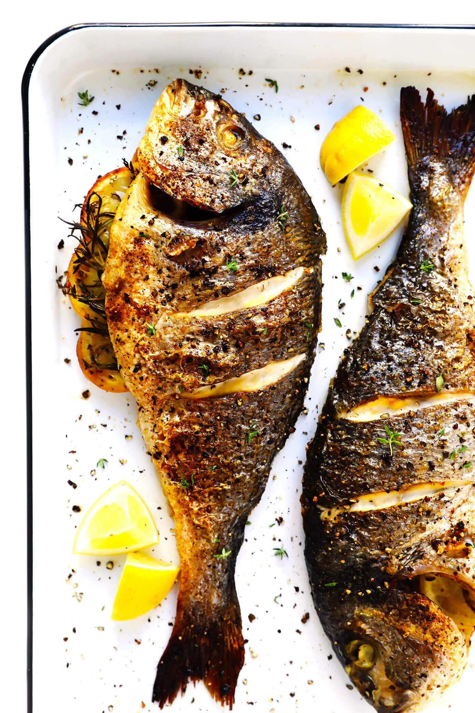

VITAMIN B12 (Cyanocobalamin)
INTRODUCTION
Vitamin B12 is unlike other B vitamins. Plants do not provide it, and your body stores large amounts. Vitamin B12 is a group of cobalt-containing compounds, known collectively as cobalamin. In the United States, cyanocobalamin is the only form of vitamin B12 commercially available in supplements.
FUNCTIONS OF Cyanocobalamin
- Vitamin B12 is needed to form RBC and DNA. It is also a key player in the function and development of brain and nerve cells. Vitamin B12 binds to the protein in the foods we eat.
- Vitamin B12 plays a key role in folate metabolism by transferring a methyl group (CH-3) from the folate coenzyme THFA. So deficiency of vitamin B12 leads to folic acid deficiency.
- Vitamin B12 also helps maintain the myelin sheath, the protective coating that surrounds nerve fibers. In addition, by helping to rearrange carbon atoms in fatty acid chains, vitamin B12 prepares them to enter the citric acid cycle.
SOURCES OF Cyanocobalamin
- Meat
- Eggs
- Poultry
- Shellfish
- Milk and milk products
- Fortified foods such as soymilk
- Organ meats (liver and kidney)

DEFICIENCY OF VITAMIN B12
We can store enough vitamin B12 in the liver to last more than 2 years, and symptoms of deficiency may not appear for up to 12 years. Vegetarians who eat neither meat nor dairy products are at risk of vitamin B12 deficiency unless they take vitamin B12 supplements or regularly eat fortified cereals.
Pernicious Anemia
Pernicious anemia is the result of an autoimmune disorder in which the body destroys the parietal cells in the stomach. Loss of parietal cells means a loss of intrinsic factor, which in turn reduces vitamin B12 absorption. Pernicious anemia is a major cause of vitamin B12 deficiency, although in the elderly, malabsorption of food-bound B12 causes the majority of B12 deficiency cases. Pernicious anemia can affect people of all ages, races, and ethnic origins. Without treatment, nerve degeneration from vitamin B12 deficiency is irreversible and ultimately proves fatal. In fact, pernicious means "leading to death."
RECIPES
Roasted Fish
Ingredients
- Fish - 1
- Chilly powder - 1 tablespoon
- Coriander powder - 1 tablespoon
- Turmeric powder - ½ teaspoon
- Ginger garlic paste - 1 teaspoon
- Lemon juice - 1 teaspoon
- Salt - as required
Directions
- In a bowl, take the fish.
- Add all the spices, salt, and curd.
- Mix well. Keep it aside for 30 minutes.
- Roast it in the oven for 15 minutes at 400 degrees Fahrenheit.
